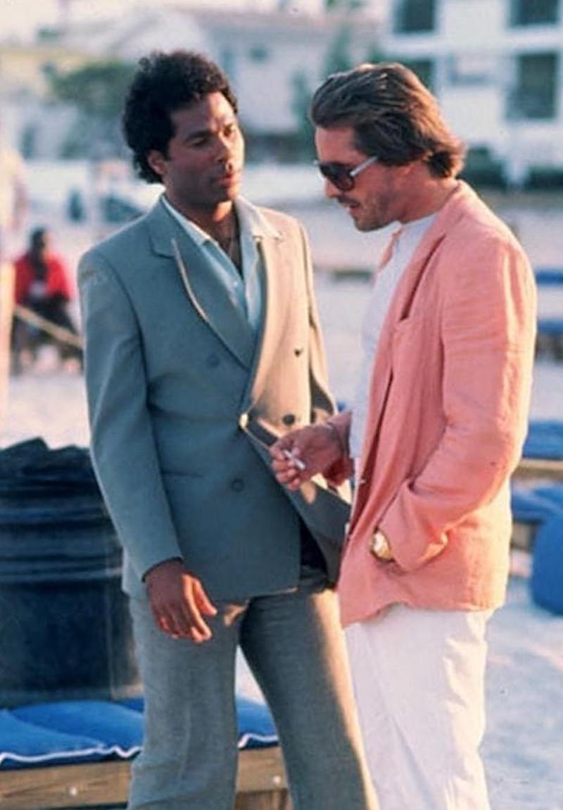
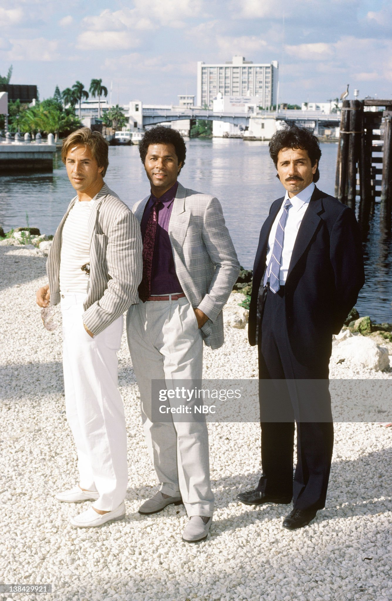

MIAMI VICE
MENU
HOME
OVERVIEW
LOCATIONS
MUSIC
CARS
FASHION
GALLERY
CONTACTS
Fashion
The clothes worn on Miami Vice had a significant influence on men's fashion. They popularized, if not invented, the "T-shirt under Armani jacket"–style, and popularized Italian men's fashion in the United States. Don Johnson's typical attire of Italian sport coat, T-shirt, white linen pants, and slip-on sockless loafers became a hit. Crockett initially wore an 18k Rolex Day-Date "President" model in the first season, until Ebel won the contract for the remaining seasons. Similarly, Crockett's perpetually unshaven appearance sparked a minor fashion trend, inspiring men to wear designer stubble at all times. In an average episode, Crockett and Tubbs wore five to eight outfits, appearing in shades of pink, blue, green, peach, fuchsia, and the show's other "approved" colors. Designers such as Vittorio Ricci, Gianni Versace, and Hugo Boss were consulted in keeping the male leads looking trendy. Costume designer Bambi Breakstone, who traveled to Milan, Paris, and London in search of new clothes, said that, "The concept of the show is to be on top of all the latest fashion trends in Europe." Jodi Tillen, the costume designer for the first season, along with Michael Mann, set the style. The abundance of pastel colors on the show reflects Miami's Art-deco architecture.
During its five-year run, consumer demand for unstructured blazers, shiny fabric jackets, and lighter pastels increased. After Six formal wear even created a line of Miami Vice dinner jackets, Kenneth Cole introduced Crockett and Tubbs shoes, and Macy's opened a Miami Vice section in its young men's department. Crockett also boosted Ray Ban's popularity by wearing a pair of Model L2052, Ray-Ban Wayfarers, which increased sales of Ray Bans to 720,000 units in 1984. In the spring of 1986, an electric razor became available named the "Stubble Device", allowing users to have a beard like Don Johnson's character. It was initially named the "Miami Device" by Wahl, but in the end the company opted to avoid a trademark infringement lawsuit. Many of the styles popularized by the TV show, such as the T-shirt under pastel suits, no socks, rolled up sleeves, and Ray-Ban sunglasses, have become the standard image of 1980s culture. The influence of Miami Vice's fashions continued into the early 1990s and, to some extent, has had a lasting impact.


by Bosiy E. 2023